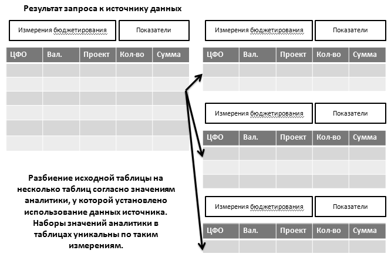

Механизм расчета по моделям позволяет автоматически формировать плановые показатели по определенным правилам. Это более сложный механизм по сравнению с настройкой зависимостей оборотов. С помощью этого механизма настраивается:
· взаимосвязь между оборотами по нескольким различным финансовым показателям;
· связь подсистемы бюджетирования с данными других подсистем;
· выполнение прочих сложных нелинейных расчетов.
Модель расчета представляет собой свод правил формирования показателей, источники данных для формирования показателей, порядок расчета и порядок использования результатов расчета.
Модель бюджетирования описывается документами Регламентная модель бюджетирования (меню «Расчеты и зависимости» - «Расчет по модели бюджетирования»).
У каждой модели указывается ее заголовок, который будет выводиться в результатах расчетов, и сценарий, в рамках которого она будет действовать.
На закладке «Расчетные свойства» указываются:
· Период выполнения расчетов, для определения плановых периодов, к которым она применима;
· Расчет для каждого периода – в том случае, если в сценарии планирования предусмотрено несколько шагов периода планирования (например, 3 месяца), тогда этот признак позволяет определить, выполняется ли расчет один раз для всех периодов сразу, либо для каждого месяца выполняется раздельный расчет;
· Рекурсивная модель – если расчет выполняется для каждого периода, позволяет модели при расчете очередного периода видеть результаты собственного расчета по предыдущему периоду. Увеличивает продолжительность расчета, поэтому следует использовать только при необходимости;
· Приоритет – очередность выполнения модели в том случае, если к одному бюджету создано несколько моделей;
· Циклический расчет – признак выполнения модели до тех пор, пока она не перестанет на выходе генерировать строки, служащие также и входными данными для нее же самой, и порождающие необходимость в очередном витке расчета. Классическим примером можно считать расчет производства с линейной схемой переделов, когда по требуемым в производство полуфабрикатам необходимо рассчитать их производство и списание полуфабрикатов следующего уровня в их производство. Соответственно, после такого расчета появляется список других полуфабрикатов, которые также должны быть рассчитаны. Т.е. возникает циклический расчет;
· Предельная вложенность цикла – количество циклов, после которых расчет циклической модели прерывается;
· Дополнительные сценарии для применения модели – список дополнительных сценариев, к которым также применяется модель.
Основной и дополнительные источники указываются на закладке «Источники данных». Именно эти источники и определяют плановые или фактические данные, служащие базой для проведения расчета.
Показатели выбранных источников и вручную добавленные показатели – переменные расчета - выводятся на закладке «Показатели модели».
При добавлении показателя вручную ему присваивается автоматически сгенерированный код, который отображается в колонке «Код» и используется затем в формулах. Если необходимо задать такой код вручную, для большей читабельности формулы, то перед добавлением показателя следует установить признак Ручное именование показателей, на верхней командной панели формы.
Перечень выполняемых расчетов в рамках модели приведен на закладке «Описание модели».
Каждый расчет открывается в отдельном окне – редакторе строки расчета по модели. Открытие выполняется при двойном щелчке по строке, нажатии на кнопку Открыть редактор или добавлении новой строки.
В данном окне указывается финансовый показатель, по которому будет сформирован оборот в рамках расчета, необходимость изменения по периодам, порядок заполнения измерений и формулы расчета показателей. В поле «Показатели расчета» в качестве справочной информации дублируется список показателей расчета.
Предусмотрено четыре способа заполнения значения измерения, которые выбираются в первой колонке:
· Фиксированное значение – измерение будет заполнено элементом соответствующего справочника, указанным в поле справа;
· По источнику данных расчета – значение измерения будет взято из соответствующего измерения источника данных. Если в полученном из источника наборе несколько строк с различными значениями данного измерения, то и строк расчета по модели будет несколько – для каждого такого значения;
· По профилю: распределение, По профилю: умножение – будет применен профиль, указанный в поле справа.
Рассмотрим более подробно расчет по модели в следующих разделах.
Для использования распределения исходных параметров по измерениям бюджетирования необходимо задать профиль, по которому будет распределяться параметр.
Такие профили заполняются в справочнике «Профили изменения данных по измерениям» (меню «Расчеты и зависимости» - «Профили изменения данных по измерениям»).
Расчет на основании учетных данных происходит, если задан основной источник данных для расчета. Источником данных является шаблон запроса к данным системы (источник данных), определенный пользователем заранее.
Внимание!!! Для использования в расчете плановых показателей по другим финансовым показателям, необходимо обращаться к источнику, базирующемуся на регистре «Обороты бюджетов». Такая настройка источника позволяет регламентной модели обращаться также и к тем данным, плановые суммы по которым вводятся в контексте документа «Бюджет», в котором происходит расчет по модели, даже если документ еще не проведен.
При обращении к данному регистру следует учесть две особенности:
Первая – фактические данные хранятся с пустым значением измерения «Сценарий».
Вторая – при обращении к нему через язык запросов необходимо учесть, что управлять периодом данных следует не через стандартный фильтр по периоду, а через значение измерения «Период планирования». Для плановых данных в этом поле хранится дата начала планового периода, а для фактических – дата операции.
Все плановые показатели, которые будут формироваться при расчете по модели, основываются на данных, которые попадут в выборку при выполнении запроса (шаблона источника данных для расчетов). Использование такой модели позволяет строить модели получения плановых показателей по данным не только подсистемы бюджетирования, но и по данным других подсистем. Например, можно запланировать объем продаж товаров, находящихся в запасах, на основе данных по фактическим остаткам номенклатуры на конец предыдущего периода и установленных цен продажи. Для этого в качестве источника для расчета по модели будут выступать данные из регистра бухгалтерии в количественном выражении, а для измерения по номенклатуре нужно будет задать использование профиля с умножением, который будет строиться по источнику данных, описывающему стоимость реализации единицы номенклатуры.
Расчет по модели на основе учетных данных удобно использовать, если данные по бюджетированию основываются на фактических учетных данных прошлых периодов.
При расчете по модели следует учитывать особенности:
· Для определения формул расчета суммовых и количественных оборотов используются показатели для расчетов, определенные в шаблоне для источника данных;
· Расчет производится в том периоде планирования, который заполняется документом «Бюджет». Если в документе формируются данные на несколько периодов планирования (например, бюджет составляется на квартал помесячно – в таком случае периода планирования три – для каждого месяца), тогда если в документе «Регламентная модель бюджетирования» установлен признак Расчет для каждого периода, то расчет будет произведен для каждого периода, иначе – только для первого;
Важно!!! Если в описании правил формирования результатов расчета указано и распределение по периодам, и использование источника данных для установки аналитики по бюджетированию, и использование профиля распределения по измерению, то расчет производится в следующем порядке:
Все разрезы аналитики, которые используют в качестве значения источник данных, указанный для модели расчета, разбивают данные выборки из источника на перечень возможных комбинаций по значениям аналитики.

В результате плановые показатели (обороты) по бюджетам будет сформированы для каждой строки результирующей таблицы.
Далее в результирующих таблицах заполняются значения аналитик, для которых заданы фиксированные значения.
Для каждой строки выполняется расчет количественных и суммовых плановых показателей (оборотов) согласно указанным формулам расчета, исходные значения показателей, по которым ведется расчет, берутся из самой строки.
Следующим этапом для каждой строки проводится распределение значений суммовых и количественных плановых показателей (оборотов) по профилю распределения по периодам.
И, наконец, проводится распределение по профилю распределения по измерению.
Используется в случаях, когда формируемые плановые показатели (обороты) не связаны с внешними данными.
В этом случае действуют следующие правила формирования оборотов по бюджетам:
· показатели для расчета являются числовыми значениями, определяемыми пользователем, на их основе строятся формулы для определения суммовых и количественных плановых показателей (оборотов);
· для определения аналитики (валюта, ЦФО, проект, контрагенты, номенклатура) задаются либо фиксированные значения, либо профили распределения по ресурсам;
· возможно указание профиля распределения по периодам.
Расчет по моделям производится в контексте того документа «Бюджет», к которому относятся статьи, указанные в качестве рассчитываемых. Если в формируемый бюджет входит лишь часть статей, описанных в регламентной модели, то будет использована только соответствующая их часть.
При создании расчетов по моделям может понадобиться использование данных, которые не хранятся в учетной системе, и не являются данными бюджетов, но представляют собой вспомогательную информацию, необходимую при расчете данных источников.
В этом случае можно использовать механизм расчетных показателей.